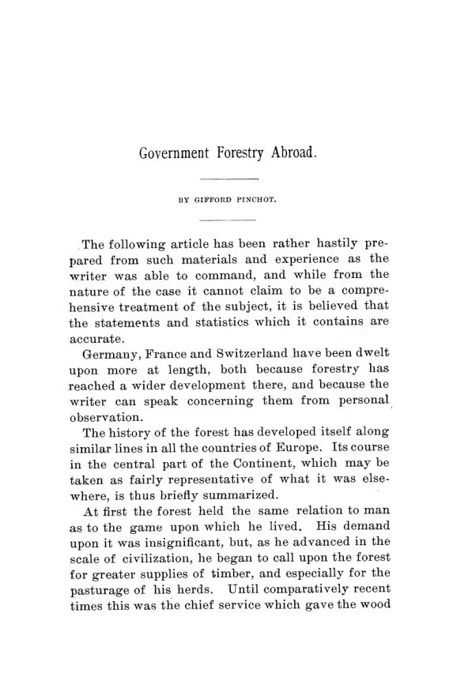

Florestas públicas, 1891: uma lei da Marinha contra o machado
Leitura: 9 min
Em 1890, os Estados Unidos protegiam suas florestas com uma lei de 1817 feita para a madeira da Marinha. Três especialistas mostram o custo disso e o que a Europa e a Índia faziam diferente.

Num mês de agosto, Edward A. Bowers, ex-inspetor de terras públicas, aproximou-se dos montes Bighorn, no norte do Wyoming, e não viu montanha nenhuma: só uma nuvem de fumaça. Ela ficou ali as semanas todas em que ele esteve na região, deslocando-se devagar para o norte. Nenhum colono, nenhum morador das cidades vizinhas deu atenção. O fogo consumia madeira e, com ela, a água de que dependia a irrigação do vale.
O relato está num dos três trabalhos lidos em Washington, em 30 de dezembro de 1890, na sessão conjunta da American Economic Association com a American Forestry Association, e publicados juntos em maio de 1891. Gifford Pinchot descreve a gestão florestal pública na Europa e nas colônias britânicas. Bowers expõe o estado das florestas federais. B. E. Fernow, chefe da Divisão Florestal do Departamento de Agricultura, pergunta se uma administração florestal americana seria praticável.
Por que a floresta pediria um dono que não morre?
Pinchot parte de dois fatos que chama de quase axiomas: árvores levam muitos anos para atingir tamanho comercial, e não se tira uma safra de floresta todo ano do mesmo terreno. Daí deduz que o manejo exige um plano de longo prazo e que a propriedade florestal fica mais segura sob um guardião imperecível, isto é, o Estado.
A comparação que abre o caso alemão é deliberadamente incômoda. Na Alemanha, as florestas cobriam 26% do território. Nos Estados Unidos, dos recursos ditos inesgotáveis, os dados mais recentes davam a mesma proporção. A diferença estava na gestão: o Estado alemão possuía ou controlava cerca de dois terços da área florestal.
Na Prússia, o Estado detinha 29% das florestas, outros entes públicos 16% e particulares 55%. A regra era nunca vender. Nem quando a Prússia foi invadida pelos franceses, diz Pinchot, a venda das florestas estatais foi seriamente cogitada. O contraexemplo vinha das aldeias que, em 1848, venderam suas florestas comunais e empobreceram com regularidade deplorável.
A gestão cabia a 681 Oberförster, os oficiais executivos, formados em um percurso de anos: estágio prático, escola florestal, um ano de direito e economia política na universidade, dois exames e longa espera pela nomeação. Pinchot adverte, porém, contra a caricatura de um sistema rígido. O que distinguia o manejo alemão era a adaptabilidade; os métodos não deveriam ser copiados, só os princípios.
Floresta pública dava prejuízo?
Não na França. O Estado francês possuía 2.657.944 acres de floresta, cerca de um nono da área florestal, que por sua vez cobria 17% do país. O serviço florestal também administrava as matas de comunas e instituições públicas, mediante taxa fixa, e reservava um quarto delas como fundo para emergências, como incêndio, enchente ou a construção de uma escola.
Pinchot resume: gestão desse tipo nada tinha de sentimentalismo nem da proteção filantrópica do “não toque”. O mesmo valia para a Índia, onde o manejo sistemático começara cerca de 35 anos antes, conduzido por Sir Dietrich Brandis. O sucesso inicial, observa, deveu-se em boa parte a ter dado receita líquida desde o início. Pela tabela de Schlich, a receita líquida média anual mais que triplicou entre 1864–1867 e 1882–1887.
A Suíça interessava por outro motivo: era uma república federativa, como os Estados Unidos. Ali a lei florestal federal veio em 1876, depois que as enchentes de 1834 nos Alpes foram atribuídas à destruição das matas de montanha. Segundo o professor Landolt, citado por Pinchot, a lei agia mais por instrução e exemplo que por punição. A floresta municipal de Zurique, o Sihlwald, com 2.400 acres, rendeu à cidade cerca de US$ 20.000 em 1889.
“O cuidado das florestas é dever da nação.” (The care of the forests is the duty of the nation.)
Como se protegia madeira com uma lei para navios?
Bowers responde com a cronologia. A base do sistema americano era uma lei de 1º de março de 1817, que autorizava reservar terras com carvalho e cedro “exclusivamente” para a Marinha, ampliada em 1831 com multa de três vezes o valor da madeira. Era nela que o governo se apoiava para proteger matas nas regiões áridas do Oeste, onde não havia nenhuma das madeiras navais previstas.
“As leis não oferecem método adequado nem para proteger a madeira pública” (The laws provide neither an adequate method for the protection of the public timber)
O resto da legislação produzia incentivos perversos. Nas Montanhas Rochosas, colonos e mineradores só podiam cortar legalmente em terra mineral, coisa que ninguém sabia identificar sem cavar um poço. Resultado: toda a população era empurrada a furtar um bem de primeira necessidade. O próprio comissário do General Land Office notava que o dono de uma mina no Arizona obtinha madeira de graça, enquanto um agricultor de Minnesota não podia tirar um graveto.
No Pacífico, a lei de 1878 vendia terra florestal a US$ 2,50 por acre, ou US$ 1.600 por milha quadrada, onde a madeira valia, segundo Bowers, US$ 20.000 por milha quadrada. Empresas contratavam trabalhadores para registrar lotes em seu nome e repassá-los. Bowers viu uma companhia contratar a tripulação inteira de navios que aportavam, pagando US$ 50 a cada um pela assinatura.
A fiscalização tinha dinheiro para cerca de 25 agentes, que deveriam cobrir 70 milhões de acres. Júris locais raramente condenavam, porque muitas vezes os próprios jurados usavam a madeira. Os cargos viraram prêmio partidário. Um dono de serraria disse a Bowers que o agente era uma forma barata de comprar proteção; só reclamava que a troca frequente de agentes estava encarecendo o serviço.
Uma administração florestal americana era viável?
Fernow começa pelo diagnóstico econômico. A ausência de manejo privado não era vício moral, mas resposta racional: com tanta mata virgem disponível, compensava tirar o melhor e partir para a próxima. Manejar significa abrir mão de receita presente por retorno futuro. Só perto dos mercados, como nos Adirondacks, o manejo privado já pagaria a conta.
Onde a cobertura florestal regula a água das montanhas, porém, o interesse é da comunidade, e o Estado representa, nas palavras de Fernow, não só o interesse comunal contra o individual, mas o futuro contra o presente. Controlar proprietários privados seria injusto e ineficaz; melhor manter a terra com o governo federal, que já era o dono. O caminho estava num projeto apresentado no 50º Congresso, o H.R. 6045, reproduzido no apêndice.
O projeto retirava as terras florestais da venda, criava um comissário de florestas com quatro assistentes e cobrava pelo uso: licença de US$ 2 para o colono cortar em cinco acres, licenças maiores com taxa por acre e por toco para serrarias. Proibia que qualquer pessoa ligada à indústria madeireira ocupasse cargo no serviço.
“toda a dificuldade é de homens, mais do que de medidas” (the whole difficulty is one of men, rather than of measures)
Do ponto de vista dos negócios, conclui Fernow, a administração era perfeitamente praticável. O obstáculo era legislativo: o enorme impulso dos maus hábitos e da política pessoal. Bowers terminava no mesmo tom, apostando que só a agitação constante levaria o país a perceber o que a destruição das florestas significava.
Na minha leitura
Na minha leitura, o volume é um tratado sobre direitos de propriedade mal definidos. Bowers descreve um bem de dono ausente: o governo possui a mata, mas não a vigia, não a vende pelo valor e não permite o uso legal. O que resta é o furto, o fogo e a fraude, com a cumplicidade de júris e fiscais. Fernow percebe que a solução não é só punir, mas cobrar: dar ao colono uma licença barata e ao madeireiro um preço por toco transforma o infrator em cliente.
O segundo ponto é de governança. Os três autores insistem que o problema não é falta de lei, mas de gente: fiscais nomeados por favor, sem preparo e mal pagos. A Prússia e a França mostram o contrário, um corpo técnico estável que gera receita. A lição permanente é que a propriedade pública só funciona com administração profissional; sem ela, o patrimônio do Estado é apenas um recurso aberto ao primeiro que chegar.
Glossário
- Oberförster
- oficial florestal prussiano encarregado da gestão direta de um distrito de floresta pública.
- plano de manejo
- documento que fixa onde, quanto e quando cortar para que a floresta renda sem se esgotar (working plan).
- talhadia composta
- manejo francês que corta rebrotas de tocos em ciclos curtos e deixa algumas árvores crescerem por vários ciclos (taillis sous futaie).
- quart en réserve
- quarta parte das florestas comunais francesas mantida como fundo de emergência.
- floresta de proteção
- mata preservada por sua função contra erosão, enchentes e avalanches, mais que pela madeira.
- stumpage
- preço pago ao dono pela madeira em pé, cobrado por toco, por volume ou por área.
Artigos desta edição
- Government Forestry Abroad — Gifford Pinchot (pp. 7–54). Panorama da gestão florestal pública na Alemanha, França, Suíça, Austrália, Índia, África do Sul e outros países. Sustenta que a floresta exige um guardião permanente, o Estado; descreve a formação dos oficiais prussianos, as receitas das florestas francesas, a lei federal suíça e a experiência indiana de Brandis, que deu lucro desde o início. Conclui que o cuidado das florestas é dever da nação. JSTOR
- The Present Condition of the Forests on the Public Lands — Edward A. Bowers (Secretary of the American Forestry Association) (pp. 57–74). Mostra que a proteção das florestas federais se apoiava numa lei de 1817 sobre madeira para a Marinha e que as demais leis empurravam colonos ao furto e favoreciam fraudes de grandes madeireiras. De 1881 a 1887, US$ 36,7 milhões em madeira furtada contra US$ 478.073 recuperados; cerca de 25 agentes para 70 milhões de acres; perda anual por incêndio estimada em US$ 8 milhões. JSTOR
- Practicability of an American Forest Administration — B. E. Fernow (Chief of Forestry Division, Department of Agriculture) (pp. 77–101). Explica a ausência de manejo privado pela abundância de mata virgem e defende que as florestas de montanha fiquem sob o governo federal. Analisa o projeto H.R. 6045, com comissário de florestas, licenças pagas e guarda contra incêndios, e estima custo de US$ 2,5 milhões, ou 5 centavos por acre, para 50 milhões de acres. O obstáculo, diz, é de homens e de política, não de medidas. JSTOR
Fontes
- Government Forestry Abroad (pp. 7–54). JSTOR · Internet Archive (PDF)
- The Present Condition of the Forests on the Public Lands (pp. 57–74). JSTOR · Internet Archive (PDF)
- Practicability of an American Forest Administration (pp. 77–101). JSTOR · Internet Archive (PDF)
- Sumário da edição no JSTOR: Publications of the American Economic Association, vol. 6, nº 3.
Documento em domínio público (EUA, publicado antes de 1931), via JSTOR Early Journal Content e Internet Archive. Resumo e comentário do autor deste site, sem afiliação com a American Economic Association. Encontrou um erro? Escreva: a correção é publicada no próprio texto, com data.
← Nº 28 · Washington, 1890: tarifas, impostos, gás e a maré das ideias Nº 30 · Nove cidades e uma conta: o gás municipal posto à prova →